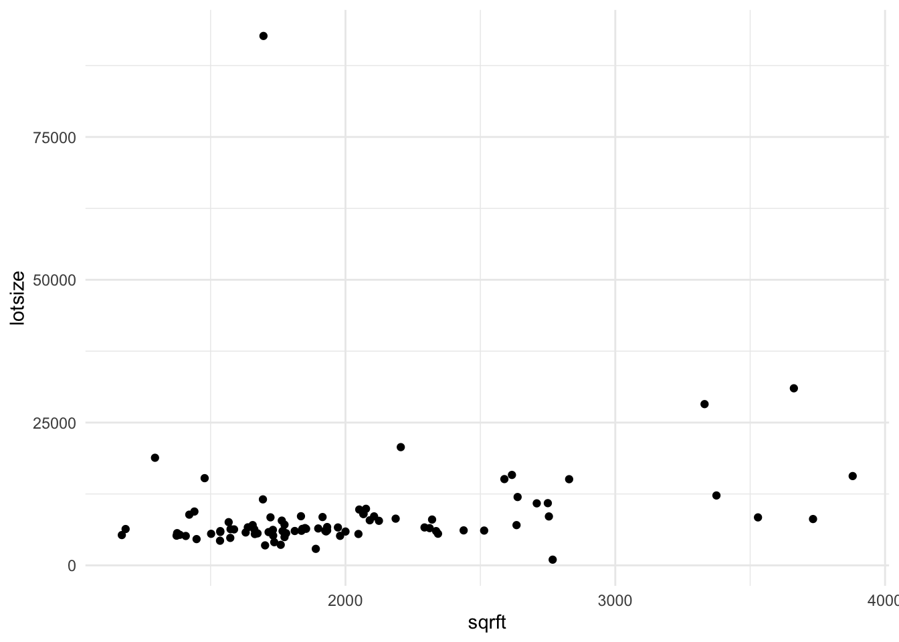

7.8 The Questions
7.8.1 Set 1
- Do economics majors watch more or less TV than computer science majors?
Code
library(tidyverse)
library(magrittr)
library(ggthemes)
GSS %>%
filter(major1 %in% c('computer science', 'economics')) %$%
t.test(tvhours ~ major1)##
## Welch Two Sample t-test
##
## data: tvhours by major1
## t = 1.7123, df = 11.663, p-value = 0.1133
## alternative hypothesis: true difference in means between group computer science and group economics is not equal to 0
## 95 percent confidence interval:
## -0.3134265 2.5800931
## sample estimates:
## mean in group computer science mean in group economics
## 2.600000 1.466667Code
GSS %>%
filter(major1 %in% c('computer science', 'economics')) %$%
wilcox.test(tvhours ~ major1)## Warning in wilcox.test.default(x = DATA[[1L]], y = DATA[[2L]], ...): cannot compute
## exact p-value with ties##
## Wilcoxon rank sum test with continuity correction
##
## data: tvhours by major1
## W = 101, p-value = 0.1372
## alternative hypothesis: true location shift is not equal to 0Code
GSS %>%
filter(major1 %in% c('computer science', 'economics')) %>%
mutate(tv_category = case_when(
tvhours < 2 ~ 1,
tvhours >= 2 & tvhours < 5 ~ 2,
tvhours >= 5 ~ 3)) %$%
# t.test(tv_category ~ major1)
wilcox.test(tv_category ~ major1)## Warning in wilcox.test.default(x = DATA[[1L]], y = DATA[[2L]], ...): cannot compute
## exact p-value with ties##
## Wilcoxon rank sum test with continuity correction
##
## data: tv_category by major1
## W = 99.5, p-value = 0.1379
## alternative hypothesis: true location shift is not equal to 0Code
GSS %>%
filter(major1 %in% c('computer science', 'economics')) %$%
wilcox.test(tvhours ~ major1)## Warning in wilcox.test.default(x = DATA[[1L]], y = DATA[[2L]], ...): cannot compute
## exact p-value with ties##
## Wilcoxon rank sum test with continuity correction
##
## data: tvhours by major1
## W = 101, p-value = 0.1372
## alternative hypothesis: true location shift is not equal to 0Code
GSS %>%
filter(major1 %in% c('computer science', 'economics')) %>%
ggplot() +
aes(x=tvhours) +
geom_histogram(bins=10)## Warning: Removed 11 rows containing non-finite values (`stat_bin()`).
- Do Americans with pets watch more or less TV than Americans without pets?
7.8.2 Set 2
- Do Americans spend more time emailing or using the web?
Code
GSS %>%
select(wwwhr, emailhr) %>%
drop_na() %$%
t.test(x=wwwhr, y=emailhr, paired=TRUE)##
## Paired t-test
##
## data: wwwhr and emailhr
## t = 13.44, df = 1360, p-value < 2.2e-16
## alternative hypothesis: true mean difference is not equal to 0
## 95 percent confidence interval:
## 5.530219 7.420553
## sample estimates:
## mean difference
## 6.475386Code
GSS %>%
ggplot() +
geom_histogram(aes(x=wwwhr), fill = 'blue') +
geom_histogram(aes(x=emailhr, fill = 'red'))## `stat_bin()` using `bins = 30`. Pick better value with `binwidth`.## Warning: Removed 986 rows containing non-finite values (`stat_bin()`).## `stat_bin()` using `bins = 30`. Pick better value with `binwidth`.## Warning: Removed 929 rows containing non-finite values (`stat_bin()`).
Code
t.test(
x = GSS$wwwhr,
y = GSS$emailhr,
paired = FALSE
)##
## Welch Two Sample t-test
##
## data: GSS$wwwhr and GSS$emailhr
## t = 12.073, df = 2398.5, p-value < 2.2e-16
## alternative hypothesis: true difference in means is not equal to 0
## 95 percent confidence interval:
## 5.657397 7.851614
## sample estimates:
## mean of x mean of y
## 13.906021 7.151515- Do Americans spend more evenings with neighbors or with relatives?
What a great question this is… so glad for the chance to answer it, and to deal with this data that someone else has coded for me. Thank you universe.
Code
wilcox_test_data <- GSS %>%
select(socrel, socommun) %>%
mutate(
family_ordered = factor(
x = socrel,
levels = c('almost daily', 'sev times a week',
'sev times a mnth', 'once a month',
'sev times a year', 'once a year', 'never')),
friends_ordered = factor(
x = socommun,
levels = c('almost daily', 'sev times a week',
'sev times a mnth', 'once a month',
'sev times a year', 'once a year', 'never'))) To begin this investigation, we’ve got to look at the data and see what is in it. If you look below, you’ll note that it sure seems that people are spending more time with their family… erp, actually no. They’re “hanging out” with their friends rather than taking their mother out to dinner.
Code
wilcox_test_data %>%
select(friends_ordered, family_ordered) %>%
rename(
Friends = friends_ordered,
Family = family_ordered
) %>%
drop_na() %>%
pivot_longer(cols = c(Friends, Family)) %>%
ggplot() +
aes(x=value, fill=name) +
geom_histogram(stat='count', position='dodge') +
scale_fill_manual(values = c('#003262', '#FDB515')) +
labs(
title = 'Do Americans Spend Times With Friends or Family?',
subtitle = 'A cutting analysis.',
fill = 'Friends or Family',
x = 'Amount of Time Spent') +
scale_x_discrete(guide = guide_axis(n.dodge = 2)) +
theme_fivethirtyeight()## Warning in geom_histogram(stat = "count", position = "dodge"): Ignoring unknown
## parameters: `binwidth`, `bins`, and `pad`
With this plot created, we can ask if what we observe in the plot is the produce of what could just be sampling error, or if this is something that was unlikely to arise due if the null hypothesis were true. What is the null hypothesis? Well, lets suppose that if we didn’t know anything about the data that we would expect there to be no difference between the amount of time spent with friends or families.
Code
## risky choice -- casting the factor to a numeric without checking what happens.
wilcox_test_data %$%
wilcox.test(
x=as.numeric(family_ordered),
y=as.numeric(friends_ordered),
paired=FALSE
)##
## Wilcoxon rank sum test with continuity correction
##
## data: as.numeric(family_ordered) and as.numeric(friends_ordered)
## W = 716676, p-value < 2.2e-16
## alternative hypothesis: true location shift is not equal to 0